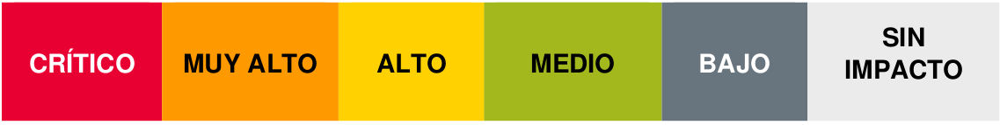

2.4.1. Documentación de incidentes¶
1. Introducción¶
El criterio de evaluación e) del Resultado de Aprendizaje 2 establece que debemos ser capaces de realizar una clasificación, valoración, documentación y seguimiento de los incidentes detectados dentro de la organización. Este criterio no es casual: representa el núcleo de la gestión profesional de incidentes de ciberseguridad.
Hasta ahora, en esta unidad hemos aprendido a:
- Clasificar incidentes mediante taxonomías estandarizadas (punto 2.1.1)
- Detectar incidentes utilizando herramientas como SIEM, IDS/IPS (punto 2.2.1)
- Investigar amenazas mediante técnicas OSINT (punto 2.3.1)
Pero detectar y clasificar un incidente es solo el comienzo. El verdadero valor profesional reside en documentar correctamente lo que ha ocurrido, valorar su impacto, establecer medidas de respuesta y realizar un seguimiento que garantice la mejora continua.
En este documento aprenderás no solo qué documentar y por qué es crucial, sino también a comprender la documentación como parte integral de un proceso más amplio: la gestión de incidentes. Dominar este proceso es lo que diferencia a un técnico reactivo de un profesional proactivo en ciberseguridad.
2. La gestión de incidentes: marco general¶
Antes de profundizar en la documentación, necesitamos comprender que esta no es una actividad aislada, sino que forma parte de un proceso más amplio y estructurado: la gestión de incidentes.
2.1. ¿Qué es un incidente de seguridad?¶
Un incidente de seguridad es cualquier suceso que afecte a la confidencialidad, integridad o disponibilidad de los activos de información de la empresa. Ejemplos de incidentes incluyen:
- Acceso o intento de acceso no autorizado a sistemas
- Uso indebido de información confidencial
- Divulgación no autorizada de datos
- Modificación o destrucción de información
- Interrupción de servicios críticos
2.2. ¿Qué es la gestión de incidentes?¶
La gestión de incidentes consiste en establecer un plan de acción estructurado y sistemático para atender, resolver y aprender de los incidentes que se produzcan. No se trata solo de "apagar fuegos", sino de:
- Atender los incidentes de forma organizada y eficiente
- Resolver los incidentes minimizando el impacto en la organización
-
Incorporar medidas de desempeño que permitan:
- Conocer la calidad del sistema de protección actual
- Detectar tendencias y patrones antes de que se conviertan en problemas mayores
- Mejorar continuamente nuestras defensas y procedimientos

2.3. El ciclo de vida de un incidente¶
Como vimos en la sección 2.1.1 (Taxonomía de Incidentes), la gestión de incidentes sigue un ciclo de vida bien definido:
- Preparación → Establecer políticas, procedimientos, herramientas y entrenar al equipo antes de que ocurra un incidente
- Identificación → Detectar y confirmar que realmente está ocurriendo un incidente de seguridad
- Contención → Aislar el problema para evitar que se propague y cause más daños
- Erradicación → Eliminar la causa raíz del incidente (malware, vulnerabilidad explotada, cuenta comprometida, etc.)
- Recuperación → Restaurar los sistemas y servicios a su estado operativo normal
- Lecciones aprendidas → Analizar qué ocurrió, cómo se gestionó y qué podemos mejorar para el futuro
La documentación es transversal a todas estas fases, siendo especialmente crítica en identificación, respuesta y aprendizaje. Sin una documentación adecuada, el conocimiento se pierde, los errores se repiten y la organización no evoluciona.
3. ¿Por qué es tan importante documentar?¶
Ahora que comprendemos que la documentación forma parte de un proceso integral de gestión, podemos entender mejor por qué es tan crucial. La documentación de incidentes no es un mero trámite burocrático, sino una herramienta estratégica que aporta un valor incalculable a la organización en múltiples dimensiones:
3.1. Generación de inteligencia de amenazas¶
La información recopilada durante y después del incidente permite identificar:
- Indicadores de Compromiso (IOCs): Hashes de malware, IPs maliciosas, dominios de comando y control, etc.
- Tácticas, Técnicas y Procedimientos (TTPs) de los atacantes: Cómo operan, qué buscan, qué herramientas utilizan
Esta inteligencia es crucial para:
- Ajustar y mejorar las reglas de detección en SIEM, IDS/IPS
- Anticipar futuros ataques con características similares
- Compartir información con otras organizaciones y CERTs para mejorar la seguridad colectiva
3.2. Lecciones aprendidas y mejora continua¶
Cada incidente es una oportunidad de aprendizaje. Documentar no solo lo que salió mal, sino también lo que funcionó bien durante la respuesta, permite:
- Fortalecer las defensas identificando puntos débiles
- Optimizar los planes de respuesta basándose en experiencias reales
- Evitar repetir errores en futuros incidentes similares
3.3. Análisis y parametrización de sistemas de seguridad¶
Conocer la naturaleza exacta del incidente, sus características técnicas y los vectores de ataque utilizados es fundamental para:
- Configurar adecuadamente firewalls, IDS/IPS y otras defensas
- Actualizar políticas de seguridad basándose en amenazas reales
- Priorizar inversiones en seguridad de forma justificada
3.4. Campañas de sensibilización efectivas¶
La documentación de incidentes reales proporciona material de gran valor para:
- Crear campañas de concienciación con casos reales de la organización
- Diseñar formación dirigida a las amenazas y vulnerabilidades específicas detectadas
- Demostrar a la dirección la necesidad de inversión en seguridad con datos concretos
3.5. Cumplimiento normativo y legal¶
Una documentación detallada y precisa es indispensable para:
- Cumplir con las obligaciones legales de notificación (INCIBE-CERT, AEPD, etc.)
- Gestionar las implicaciones legales del incidente (posibles delitos, responsabilidades)
- Proporcionar evidencias válidas en caso de procedimientos judiciales
- Demostrar diligencia debida ante auditorías y reguladores
3.6. Conocimiento del adversario¶
Documentar sistemáticamente los incidentes permite:
- Conocer a los atacantes: ¿Son automatizados? ¿Dirigidos? ¿Qué nivel de sofisticación tienen?
- Identificar sus estrategias y patrones de ataque
- Detectar campañas de ataque sostenidas contra la organización
- Establecer atribución cuando sea posible

Principio fundamental
"Un incidente no documentado es un incidente del que no se puede aprender. Una organización que no aprende de sus incidentes está condenada a repetirlos."
Con esta comprensión de por qué la documentación es tan crítica y estratégica, estamos preparados para abordar la siguiente pregunta fundamental: ¿qué información concreta debemos registrar?
4. ¿Qué debemos documentar?¶
Ahora que entendemos el contexto (la gestión integral de incidentes en la sección 2) y la motivación (por qué documentar es estratégico en la sección 3), llegamos a la pregunta central: ¿qué información concreta debemos registrar?
Para que la documentación sea útil, debe ser detallada, precisa y estructurada. A continuación, se presenta un listado exhaustivo de los elementos clave que se deben registrar, basados en la "Guía Nacional de Notificación y Gestión de Ciberincidentes" de INCIBE-CERT.
Documentación desde el minuto uno
La documentación debe comenzar desde el momento de la detección del incidente, no al final. Registra cada acción, decisión y descubrimiento en tiempo real. Tu "yo del futuro" (y tus compañeros) te lo agradecerán.
4.1. Información General del Incidente¶
Esta sección establece el contexto básico del incidente:
-
Asunto: Una descripción breve y clara que identifique el incidente de forma única
- Ejemplo: "Incidente de ransomware WannaCry en servidor de ficheros PROD-FS-01"
- Ejemplo: "Campaña de phishing dirigida al departamento de contabilidad"
-
OSE/PSD: Denominación del Operador de Servicios Esenciales o Proveedor de Servicios Digitales que notifica (si aplica según normativa NIS)
-
Identificación del afectado: Nombre completo de la organización o particular afectado
-
Sector estratégico: Si aplica según directiva NIS
- Energía, transporte, financiero, sanidad, suministro de agua, infraestructuras digitales, etc.
-
Fechas y horas clave (con la mayor precisión posible):
- Fecha y hora del incidente: ¿Cuándo ocurrió realmente? (puede determinarse después mediante análisis forense)
- Fecha y hora de detección: ¿Cuándo nos dimos cuenta?
- La diferencia entre ambas es el "dwell time" o tiempo de permanencia del atacante sin ser detectado
-
Descripción detallada: Una narración completa y cronológica de lo sucedido
- ¿Qué se ha observado?
- ¿Cómo se ha detectado? (alerta del SIEM, usuario reportando, análisis proactivo...)
- ¿Qué sistemas están afectados?
-
Origen del incidente (si se conoce o se sospecha):
- Apertura de fichero adjunto malicioso
- Conexión de dispositivo USB infectado
- Acceso a página web comprometida
- Explotación de vulnerabilidad conocida/0-day
- Credenciales comprometidas
- Ataque de fuerza bruta exitoso

4.2. Clasificación y Valoración¶
Esta sección es crucial para priorizar la respuesta y asignar recursos adecuadamente:
-
Taxonomía (Clasificación): Clasificar el incidente según la taxonomía estándar vista en el punto 2.1.1
- Contenido Abusivo (spam, contenido dañino, etc.)
- Código Dañino (virus, gusano, troyano, spyware, etc.)
- Recopilación de información (escaneo, análisis de paquetes, ingeniería social, etc.)
- Intento de intrusión (explotación de vulnerabilidades, inicio de sesión no autorizado, etc.)
- Intrusión (compromiso de cuenta, aplicación, sistema...)
- Disponibilidad (DoS, DDoS, sabotaje, interrupción...)
- Seguridad de la información (acceso no autorizado, modificación, fuga de datos...)
- Fraude (uso no autorizado de recursos, phishing, suplantación de identidad...)
- Vulnerable (sistema con vulnerabilidad conocida no parcheada)
- Otros (cualquier incidente que no encaje en las categorías anteriores)
-
Nivel de Peligrosidad: Evaluación de la amenaza en sí misma
- Se basa en las características intrínsecas de la amenaza
- ¿Es un malware muy sofisticado y destructivo?
- ¿Es un APT (Advanced Persistent Threat) con gran capacidad?
- ¿Es un ataque DDoS masivo con capacidad de saturar la infraestructura?
- Niveles según guía INCIBE: Crítico, Alto, Medio, Bajo
-
Nivel de Impacto: Evaluación de las consecuencias reales o potenciales
- Se evalúa el daño causado o que podría causar a la organización
- ¿Se han perdido datos sensibles?
- ¿Se ha interrumpido un servicio crítico?
- ¿Hay daño reputacional?
- ¿Hay pérdidas económicas?
- ¿Afecta al cumplimiento normativo?
- Niveles según guía INCIBE: Crítico, Alto, Medio, Bajo
-
Impacto transfronterizo: Indicar si el incidente afecta a otros estados miembros de la UE (relevante para directiva NIS)


Peligrosidad vs. Impacto: diferencia fundamental
Es crucial no confundir estos dos conceptos:
- PELIGROSIDAD: Capacidad potencial de la amenaza de causar daño (características del ataque)
- IMPACTO: Daño real o potencial causado a la organización (consecuencias del incidente)
Ejemplo 1: Un ransomware muy sofisticado (PELIGROSIDAD ALTA) detectado y aislado en un equipo de pruebas tiene un IMPACTO BAJO.
Ejemplo 2: Un ataque de phishing básico (PELIGROSIDAD MEDIA) que compromete credenciales del CEO y provoca una transferencia fraudulenta de 500.000€ tiene un IMPACTO CRÍTICO.
4.3. Detalles Técnicos¶
Esta información es esencial para el análisis técnico y la mejora de defensas:
-
Recursos tecnológicos afectados: Inventario detallado de activos comprometidos
- Direcciones IP (internas y públicas)
- Nombres de host/FQDN
- Sistemas operativos y versiones
- Aplicaciones afectadas y versiones
- Bases de datos comprometidas
- Servicios interrumpidos
-
Indicadores de Compromiso (IOCs): Elementos técnicos que identifican el ataque
- Hashes de ficheros maliciosos (MD5, SHA1, SHA256)
- Dominios maliciosos contactados
- IPs de comando y control (C&C)
- URLs de phishing o descarga de malware
- Claves de registro modificadas
- Nombres de ficheros característicos
- Patrones en nombres de procesos
-
Indicadores de Ataque (IoAs): Tácticas y técnicas empleadas
- Mapeado según framework MITRE ATT&CK
- Ejemplo: "T1566.001 - Phishing: Spearphishing Attachment"
- Ejemplo: "T1486 - Data Encrypted for Impact"
- Ejemplo: "T1059 - Command and Scripting Interpreter"

4.4. Gestión y Respuesta¶
Esta sección documenta cómo se ha gestionado el incidente, información crítica para las lecciones aprendidas:
-
Plan de acción y contramedidas: Descripción detallada de las acciones tomadas
- "10:15 - Aislamiento del servidor PROD-FS-01 de la red"
- "10:30 - Bloqueo de IPs maliciosas en firewall perimetral"
- "11:00 - Captura de memoria RAM del servidor para análisis forense"
- "11:30 - Despliegue de reglas YARA para detectar variantes del malware"
- "14:00 - Restauración desde backup de hace 24h tras verificar integridad"
-
Herramientas utilizadas: Software y hardware empleado en la respuesta
- SIEM (Splunk, ELK, QRadar...)
- EDR (CrowdStrike, SentinelOne, Microsoft Defender...)
- Herramientas forenses (FTK, Autopsy, Volatility, Wireshark...)
- Sandboxes de análisis (Cuckoo, Any.Run, Joe Sandbox...)
-
Colaboraciones: Equipos y organizaciones que han participado
- Equipos internos: sistemas, networking, legal, comunicación
- Externos: INCIBE-CERT, fabricantes (Microsoft, Cisco...), proveedores de servicios
- Ejemplo: "Colaboración con el equipo de Threat Intelligence de CrowdStrike para análisis del malware"
-
Línea temporal de acciones: Cronología precisa de toda la respuesta
- Fecha y hora de cada acción significativa
- Quién realizó la acción
- Resultado de la acción
- Esta timeline es fundamental para el análisis post-incidente
-
Medios necesarios para la resolución: Recursos consumidos
- Jornadas-Persona (JP) empleadas: "5 JP del equipo SOC, 2 JP del equipo de sistemas"
- Horas extra, fines de semana trabajados
- Ayuda externa contratada

La importancia de la timeline
Una línea temporal detallada no solo ayuda a entender qué ocurrió, sino también a identificar:
- Cuellos de botella en la respuesta
- Tiempos de reacción mejorables
- Dependencias críticas
- Efectividad de las contramedidas
4.5. Consecuencias y Análisis Post-Incidente¶
Esta sección documenta el impacto real del incidente en la organización:
-
Afectación: Identificación de los afectados finales
- La propia empresa (sistemas, datos, reputación)
- Clientes (datos personales expuestos, servicios interrumpidos)
- Particulares (empleados, terceros)
- Otras organizaciones (proveedores, partners)
-
Impacto económico estimado: Cuantificación de costes
- Costes directos:
- Horas de trabajo del equipo de respuesta
- Servicios externos contratados
- Sustitución o reparación de equipos
- Costes de notificación a afectados
- Costes indirectos:
- Pérdida de negocio durante la interrupción
- Oportunidades de negocio perdidas
- Posibles multas regulatorias (RGPD, ENS...)
- Daño reputacional (pérdida de clientes)
- Incremento de primas de seguros
- Costes directos:
-
Extensión geográfica: Alcance del incidente
- Local (una oficina, un centro de datos)
- Autonómico (varias oficinas en la misma región)
- Nacional (toda la organización en España)
- Supranacional (afecta a operaciones en otros países)
-
Daños reputacionales: Afectación a la imagen corporativa
- ¿Ha salido en medios de comunicación?
- ¿Se ha perdido confianza de clientes o partners?
- ¿Ha habido críticas en redes sociales?
- ¿Afecta a la cotización bursátil? (si es empresa cotizada)
-
Regulación afectada: Marco normativo que aplica al incidente
- ENS (Esquema Nacional de Seguridad)
- RGPD (Reglamento General de Protección de Datos)
- Directiva NIS / Ley PIC
- Otras normativas sectoriales (PCI-DSS para sector financiero, HIPAA para sanitario...)
-
Actuación de FFCCSE: Intervención de autoridades
- ¿Se ha requerido la intervención de Policía Nacional o Guardia Civil (GDT)?
- ¿Se ha presentado denuncia?
- ¿Hay investigación judicial abierta?
-
Adjuntos y evidencias: Material complementario
- Capturas de pantalla de alertas y sistemas afectados
- Logs relevantes (sanitizados para proteger información sensible)
- Correos electrónicos de phishing (con cabeceras completas)
- Muestras de malware (en formato seguro)
- Informes de análisis forense
- Comunicaciones con afectados y autoridades


Con todas estas secciones completadas (4.1 a 4.5), tenemos documentado el qué ocurrió, cómo respondimos y cuáles fueron las consecuencias. Pero hay un aspecto crítico que no podemos ignorar y que condiciona cómo obtenemos y manejamos toda esta información: el marco legal.
Máxima fundamental
"En caso de duda sobre la legalidad de una acción durante la respuesta al incidente, consulta con el departamento legal ANTES de actuar. Es mejor perder algo de tiempo que perder evidencias válidas o incurrir en responsabilidades legales."
5. Seguimiento de incidentes: más allá de la resolución¶
Hasta ahora hemos visto qué documentar durante la detección y respuesta al incidente. Sin embargo, un error común es considerar que el trabajo termina cuando el incidente está "resuelto técnicamente". Nada más lejos de la realidad: el seguimiento es una fase crítica que cierra el ciclo de vida del incidente y prepara a la organización para el futuro.
El seguimiento garantiza tres objetivos fundamentales:
- Que las medidas tomadas fueron efectivas y el problema está realmente resuelto
- Que no hay recurrencia del problema (el atacante no ha dejado puertas traseras)
- Que la organización aprende y mejora continuamente sus defensas

5.1. Seguimiento durante la resolución¶
Mientras el incidente está siendo gestionado, es fundamental mantener un seguimiento activo que proporcione visibilidad del estado actual a todas las partes interesadas:
5.1.1. Información de estado a mantener¶
-
Estado actual del incidente: ¿En qué fase estamos?
- Identificación
- Contención (parcial/total)
- Erradicación (en progreso)
- Recuperación (iniciada/completada)
-
Acciones pendientes: Lista priorizada de tareas por realizar
- "Pendiente: Análisis forense completo del servidor PROD-DB-02"
- "Pendiente: Cambio de todas las credenciales potencialmente comprometidas"
- "Pendiente: Parcheo de la vulnerabilidad explotada en los 15 servidores restantes"
-
Responsables asignados: ¿Quién está trabajando en cada tarea?
- Análisis forense → Juan García (Equipo SOC)
- Cambio de credenciales → María López (Equipo Sistemas)
- Parcheo → Pedro Martínez (Equipo Infraestructura)
-
Tiempos estimados: ¿Cuándo esperamos tener resuelto cada punto?
- ETR (Estimated Time to Resolution) por tarea
- ETA (Estimated Time of Arrival) para hitos críticos
-
Bloqueos y dependencias: ¿Qué impide avanzar?
- "Bloqueado: Esperando aprobación de dirección para apagar el servidor de producción"
- "Bloqueado: Pendiente de respuesta del fabricante sobre el parche de emergencia"
5.1.2. Comunicación continua¶
El seguimiento no sirve de nada si la información no fluye. Establece canales de comunicación claros:
-
Comunicación interna:
- Actualizaciones regulares al equipo de respuesta (daily standups si es incidente crítico)
- Informes de estado a la dirección (frecuencia según criticidad)
- Coordinación con equipos dependientes (sistemas, redes, aplicaciones...)
-
Comunicación externa:
- Actualizaciones a clientes afectados (si aplica)
- Coordinación con INCIBE-CERT u otras autoridades
- Relación con medios de comunicación (a través del equipo de comunicación corporativa)
Herramientas de seguimiento
Un sistema de ticketing es fundamental para el seguimiento efectivo:
- Jira: Muy usado en entornos DevOps/ágiles
- ServiceNow: Común en grandes organizaciones
- OTRS: Solución open source popular
- TheHive: Específico para respuesta a incidentes de seguridad
- Plataformas SOAR: Automatizan parte del seguimiento (Splunk SOAR, Palo Alto Cortex XSOAR)
Incluso un sistema simple de issues de GitHub/GitLab puede ser efectivo para equipos pequeños.
5.2. Seguimiento post-resolución¶
Una vez que consideramos el incidente "resuelto" técnicamente, el seguimiento continúa con dos objetivos: verificar que realmente está resuelto y cerrar formalmente el incidente.
5.2.1. Verificación de la resolución¶
No basta con que los síntomas hayan desaparecido; hay que confirmar que la amenaza está completamente erradicada:
Monitorización intensiva post-incidente¶
- Incrementar temporalmente el nivel de monitorización en los sistemas afectados
- Duración recomendada: mínimo 72 horas, idealmente 1-2 semanas
-
Qué monitorizar:
- Búsqueda activa de los IOCs identificados
- Comportamientos anómalos similares al incidente
- Intentos de comunicación con C&C conocidos
- Creación de cuentas o procesos sospechosos
Verificación de IOCs¶
-
Realizar barridos completos de la red con los IOCs identificados:
- Hashes de malware
- IPs y dominios maliciosos
- Patrones de comportamiento
-
Usar herramientas como:
- EDR para buscar en todos los endpoints
- SIEM para analizar logs históricos
- Network monitoring para tráfico sospechoso
Validación con usuarios¶
- Confirmar con los usuarios de los sistemas afectados que todo funciona correctamente
-
Verificar que no hay:
- Comportamientos anómalos
- Pérdida de datos
- Degradación de rendimiento
- Problemas de acceso

5.2.2. Cierre formal del incidente¶
El incidente se cierra formalmente solo cuando se cumplen todos estos criterios:
- ✅ La amenaza ha sido erradicada completamente (verificado mediante monitorización)
- ✅ Los sistemas están completamente recuperados a estado operativo normal
- ✅ Se ha generado el informe final del incidente (ver sección 6)
- ✅ Se han documentado las lecciones aprendidas (ver sección 5.3)
- ✅ Se han implementado o planificado las mejoras identificadas
- ✅ Se han realizado todas las notificaciones obligatorias (INCIBE-CERT, AEPD, clientes...)
El cierre debe documentarse en el sistema de ticketing con:
- Fecha y hora de cierre
- Persona responsable del cierre
- Confirmación de verificación
- Enlace al informe final y lecciones aprendidas
5.3. Lecciones aprendidas: el verdadero valor del incidente¶
Esta es posiblemente la parte más valiosa del proceso completo de gestión de incidentes. Cada incidente, por pequeño que sea, es una oportunidad de aprendizaje y mejora que no debe desperdiciarse.

5.3.1. Estructura del análisis de lecciones aprendidas¶
El análisis debe estructurarse en tres bloques fundamentales:
¿Qué salió bien? (Reforzar fortalezas)¶
Identificar los aciertos durante la respuesta al incidente:
- Detección temprana gracias a alertas bien configuradas
- Respuesta rápida y coordinada del equipo
- Procedimientos que funcionaron correctamente
- Herramientas que fueron efectivas
- Buena comunicación interna/externa
- Colaboraciones exitosas con terceros
Objetivo: Reconocer el buen trabajo, mantener lo que funciona y documentar mejores prácticas.
Ejemplo real:
"La detección fue muy rápida (15 minutos desde el inicio del ataque) gracias a la regla SIEM SP-032 que detectó el comportamiento anómalo de tráfico saliente. Esta regla debe mantenerse y considerarse como modelo para otras similares."
¿Qué salió mal? (Identificar debilidades)¶
Analizar honestamente los fallos y debilidades mostradas:
- Retrasos en la detección o respuesta (y sus causas)
- Procedimientos que no funcionaron o no existían
- Falta de herramientas o capacidades técnicas
- Problemas de comunicación o coordinación
- Errores humanos (sin buscar culpables, pero identificando áreas de mejora)
- Dependencias críticas no identificadas previamente
Objetivo: Identificar áreas de mejora sin buscar culpables individuales (enfoque en procesos, no en personas).
Ejemplo real:
"El proceso de obtención de aprobación para aislar el servidor crítico tomó 2 horas debido a la falta de un procedimiento claro de escalado en horario nocturno. Esto permitió que el ransomware se propagara a 3 servidores adicionales."
¿Qué podemos mejorar? (Plan de acción)¶
Esta es la parte más importante: convertir el aprendizaje en acciones concretas de mejora. Debe estructurarse en tres ámbitos:
A) Prevención: ¿Cómo evitar que vuelva a ocurrir?¶
Acciones para reducir la probabilidad de incidentes similares:
-
Actualización y parcheo:
- "Implementar proceso automático de parcheo para sistemas críticos"
- "Actualizar urgentemente el software X en todos los servidores"
-
Configuración de seguridad:
- "Habilitar MFA (autenticación multifactor) para todas las cuentas administrativas"
- "Implementar segmentación de red para aislar sistemas críticos"
- "Reforzar reglas del firewall de aplicaciones web"
-
Formación del personal:
- "Campaña de concienciación sobre phishing dirigida al departamento de finanzas"
- "Formación técnica en análisis de malware para el equipo SOC"
-
Políticas y procedimientos:
- "Actualizar política de contraseñas: mínimo 12 caracteres + rotación cada 90 días para cuentas privilegiadas"
- "Establecer política de gestión de vulnerabilidades críticas: parchear en menos de 48h"
B) Detección: ¿Cómo detectarlo más rápido la próxima vez?¶
Acciones para mejorar la capacidad de detección:
-
Nuevas alertas y reglas:
- "Crear alerta SIEM para detectar escaneos de red internos desde endpoints"
- "Implementar detección de uso de herramientas de hacking comunes (mimikatz, psexec...)"
-
Mejores IOCs y threat intelligence:
- "Suscribirse al feed de amenazas de INCIBE-CERT"
- "Implementar integración de threat intelligence en el EDR"
-
Monitorización adicional:
- "Desplegar sensores de red en el segmento de servidores de BBDD"
- "Implementar log forwarding desde los sistemas OT al SIEM"
C) Respuesta: ¿Cómo responder más eficazmente?¶
Acciones para mejorar la eficacia y rapidez de la respuesta:
-
Actualizar runbooks y playbooks:
- "Crear playbook específico para respuesta a ransomware"
- "Documentar procedimiento de escalado 24/7 con árbol de decisión claro"
-
Mejorar la comunicación:
- "Establecer canal de Slack dedicado para gestión de incidentes críticos"
- "Crear plantillas de comunicación para diferentes audiencias (técnica, dirección, clientes)"
-
Disponer de mejores herramientas:
- "Evaluar y adquirir herramienta de análisis forense automatizado"
- "Contratar servicio de incident response retainer con empresa especializada"
-
Recursos y capacidades:
- "Ampliar equipo SOC: contratar 2 analistas de nivel 2"
- "Contratar servicio gestionado de EDR (MDR)"
5.3.2. Sesión de "post-mortem" o "retrospectiva"¶
La forma más efectiva de capturar las lecciones aprendidas es mediante una reunión dedicada con todo el equipo involucrado:
Organización de la sesión¶
- Cuándo: Entre 1-2 semanas después del cierre del incidente (cuando aún está fresco pero hay perspectiva)
- Duración: 1-2 horas (según criticidad del incidente)
-
Participantes:
- Todo el equipo de respuesta al incidente
- Responsables de los sistemas afectados
- Representante de dirección/management
- Opcional: Legal, Comunicación (si fueron involucrados)
-
Facilitador: Persona neutral que guíe la sesión (puede ser el CISO o un consultor externo)
Reglas fundamentales¶
- Sin culpables: Enfoque en procesos y sistemas, no en personas
- Ambiente de confianza: Lo que se dice en la sala, se queda en la sala (salvo mejoras identificadas)
- Basado en hechos: Usar datos y evidencias, no opiniones o suposiciones
- Accionable: Cada problema identificado debe llevar a acciones concretas
- Documentado: Alguien toma notas detalladas de la sesión
Agenda típica¶
-
Cronología del incidente (15-20 min)
- Reconstruir la timeline paso a paso
- Identificar momentos críticos y puntos de decisión
-
¿Qué salió bien? (15-20 min)
- Cada participante comparte aciertos observados
- Identificar mejores prácticas a mantener
-
¿Qué salió mal? (20-30 min)
- Discusión abierta de problemas y debilidades
- Análisis de causa raíz (técnica de los "5 porqués")
-
¿Qué podemos mejorar? (30-40 min)
- Brainstorming de mejoras
- Priorización de acciones (crítico/alto/medio/bajo)
- Asignación de responsables y plazos
-
Cierre y compromisos (10 min)
- Resumen de acciones acordadas
- Confirmación de responsables y plazos
- Agradecimientos al equipo
Herramienta útil: Técnica de los 5 porqués
Para llegar a la causa raíz de un problema, pregunta "¿Por qué?" cinco veces:
- Problema: "El ransomware cifró 50 servidores"
- ¿Por qué? "Porque se propagó lateralmente por la red"
- ¿Por qué? "Porque todos los servidores estaban en el mismo segmento de red sin restricciones"
- ¿Por qué? "Porque no teníamos implementada segmentación de red"
- ¿Por qué? "Porque no se priorizó en el presupuesto de seguridad"
- ¿Por qué? "Porque no se había demostrado el riesgo con datos concretos"
- Acción: "Elaborar análisis de riesgos que justifique inversión en segmentación de red"
5.3.3. Actualización de documentación y sistemas¶
Las lecciones aprendidas deben materializarse en cambios tangibles en la organización:
Actualización de políticas de seguridad¶
- Revisar y actualizar la Política de Seguridad de la Información
- Actualizar políticas específicas (gestión de accesos, copias de seguridad, etc.)
- Asegurar que las políticas reflejan los nuevos controles implementados
Mejora de playbooks y runbooks¶
-
Playbooks (qué hacer ante cada tipo de incidente):
- Crear nuevos playbooks si no existían para el tipo de incidente sufrido
- Actualizar playbooks existentes con mejores prácticas identificadas
- Ejemplo: "Playbook de respuesta a ransomware v2.1 (actualizado post-incidente PI-2024-023)"
-
Runbooks (cómo hacer tareas específicas):
- Documentar procedimientos técnicos que fueron efectivos
- Ejemplo: "Runbook: Aislamiento de servidor Windows en emergencia"
- Ejemplo: "Runbook: Captura de memoria RAM para análisis forense"
Casos de uso nuevos en el SIEM¶
- Implementar las nuevas reglas de detección identificadas
- Ajustar umbrales de alertas existentes que generaron falsos positivos/negativos
- Documentar la regla con referencia al incidente que motivó su creación
Material para formación y concienciación¶
- Crear casos prácticos basados en el incidente real (anonimizando si es necesario)
- Actualizar el programa de concienciación con las lecciones aprendidas
- Grabar vídeos o presentaciones sobre el incidente y su gestión (uso interno)
Actualización de planes de respuesta a incidentes¶
- Actualizar el Plan de Respuesta a Incidentes corporativo
- Actualizar el Plan de Continuidad de Negocio (BCP) si se identificaron debilidades
- Actualizar el Plan de Recuperación ante Desastres (DRP) si aplica
5.3.4. Seguimiento de mejoras implementadas¶
Identificar mejoras es inútil si no se implementan. Establecer un proceso de seguimiento:
-
Registro de acciones de mejora: Mantener una lista con:
- Descripción de la mejora
- Responsable asignado
- Plazo comprometido
- Estado actual (pendiente/en progreso/completada)
- Referencia al incidente que la motivó
-
Revisiones periódicas: Reuniones de seguimiento (mensuales o trimestrales) para verificar avance
-
Métricas de mejora continua: KPIs como:
- Tiempo medio de detección (MTTD - Mean Time To Detect)
- Tiempo medio de respuesta (MTTR - Mean Time To Respond)
- Número de incidentes recurrentes (debería bajar)
- Porcentaje de mejoras implementadas vs identificadas
Frase para recordar
"Cada incidente es una inversión en el futuro de la seguridad de la organización, pero solo si la organización está dispuesta a aprender de ella. Las organizaciones que no aprenden de sus incidentes están condenadas a repetirlos, cada vez con mayor coste."
Indicador de madurez
Una organización madura en ciberseguridad se distingue no por la ausencia de incidentes (imposible en el panorama actual de amenazas), sino por:
- Su capacidad de detectarlos rápidamente
- Su efectividad al responder y contenerlos
- Su disciplina al documentar y aprender de cada uno
- Su compromiso de implementar mejoras identificadas
El seguimiento y las lecciones aprendidas son el indicador más claro de esta madurez.

6. ¿Cómo documentar un incidente? El arte de escribir informes técnicos¶
Llegados a este punto, hemos recorrido un viaje completo por la gestión y documentación de incidentes:
- Entendemos el contexto: La gestión de incidentes como proceso integral (sección 2)
- Conocemos la motivación: Por qué documentar es estratégico (sección 3)
- Sabemos el QUÉ: Qué información concreta registrar (sección 4)
- Comprendemos el CUÁNDO: El seguimiento durante y después del incidente (sección 5)
Ahora llega el momento de abordar el CÓMO: ¿Cómo plasmar toda esa información en un informe técnico que sea claro, útil, profesional y efectivo?
6.1. La importancia de saber comunicar¶
Saber qué documentar es el primer paso. El segundo, y no menos importante, es saber cómo plasmarlo de forma que:
- Diferentes audiencias (técnicos, directivos, legal, auditoría) puedan entenderlo
- La información sea fácilmente recuperable y consultable en el futuro
- Sirva como referencia para incidentes similares posteriores
- Cumpla con los requisitos legales y normativos de notificación
- Ayude a tomar decisiones fundamentadas basadas en datos
Un buen informe de incidente no es solo una colección de datos técnicos; es una narración estructurada que cuenta una historia: qué pasó, cómo lo detectamos, qué hicimos, cuál fue el resultado y qué aprendimos.
6.2. Del contenido a la forma: enlace con la guía de redacción¶
Documentar un incidente técnico de seguridad es un caso particular de comunicación técnica profesional, que tiene sus propias reglas, convenciones y mejores prácticas.
Por ello, para aprender a redactar informes técnicos de calidad profesional, desde la estructura y el lenguaje hasta consejos específicos para incidentes de seguridad, te recomendamos consultar la siguiente guía detallada que complementa perfectamente este documento:
En esa guía encontrarás:
- Consejos estratégicos: Cómo definir objetivos y audiencias
- Consejos de estructura: Cómo organizar el contenido del informe
- Consejos de redacción: Estilo, lenguaje y técnicas de escritura profesional
- Plantillas y ejemplos: Para diferentes tipos de documentos
Integración de ambos documentos
Este documento (2.4.1) te dice QUÉ documentar de un incidente.
El documento 2.4.2 te enseña CÓMO escribirlo profesionalmente.
Ambos son complementarios y necesarios para convertirte en un gestor de incidentes competente.
7. Bibliografía¶
Para profundizar en la documentación y gestión de incidentes de seguridad, consulta las siguientes fuentes oficiales:
7.1. Guías nacionales de INCIBE-CERT¶
-
Guía Nacional de Notificación y Gestión de Ciberincidentes
- Contenido: Taxonomía de incidentes, procedimientos de notificación, criterios de peligrosidad e impacto
- Público objetivo: OSE, PSD y todas las organizaciones en España
- Actualización: Revisa la versión más reciente (actualizada periódicamente)
-
Guía de Gestión de Ciberincidentes para el Sector Privado
- Contenido: Procedimientos detallados, plantillas, casos de uso
- Público objetivo: PYMES y grandes empresas del sector privado
- Valor añadido: Tablas de cálculo de impacto y ejemplos prácticos
7.2. Marcos y estándares internacionales¶
-
NIST SP 800-61 Rev. 2: Computer Security Incident Handling Guide
- Guía de referencia internacional para la gestión de incidentes
- Disponible en NIST
-
ISO/IEC 27035: Information security incident management
- Estándar internacional para gestión de incidentes de seguridad
- Complementa perfectamente ISO/IEC 27001
7.3. Recursos sobre análisis forense y evidencias¶
-
RFC 3227: Guidelines for Evidence Collection and Archiving
- Directrices técnicas para la recopilación y archivo de evidencias digitales
-
ENISA: Recursos y publicaciones sobre gestión de incidentes
8. Actividad práctica¶
A continuación, se propone una actividad práctica para aplicar los conocimientos adquiridos en la documentación de incidentes de seguridad.
8.1. Actividad práctica: Documentación completa de un incidente real¶
Para poner en práctica todo lo aprendido en este documento, realiza la siguiente actividad:
8.1.1. Descripción de la actividad¶
-
Selección del incidente (Opción A o B):
- Opción A: Elige un incidente de seguridad real que haya sido noticia recientemente
- Busca información en fuentes abiertas: noticias, blogs de seguridad, informes de fabricantes, INCIBE-CERT
- Ejemplos: Ransomware en entidad pública, fuga de datos en empresa conocida, campaña de phishing masiva
- Opción B: Utiliza un incidente simulado proporcionado por el profesor
- Opción A: Elige un incidente de seguridad real que haya sido noticia recientemente
-
Investigación y recopilación de información:
- Busca toda la información disponible sobre el incidente
- Toma notas organizadas según las secciones del documento
- Si falta información (normal en fuentes abiertas), especifícalo en tu documentación
-
Elaboración de la documentación completa:
Utilizando la estructura completa vista en este documento, elabora un informe que incluya:
- Información general del incidente (sección 4.1)
- Clasificación y valoración completa (sección 4.2)
- Taxonomía según INCIBE-CERT
- Nivel de peligrosidad (justificado)
- Nivel de impacto (justificado)
- Detalles técnicos disponibles (sección 4.3)
- IOCs identificados
- TTPs mapeadas con MITRE ATT&CK (si es posible)
- Gestión y respuesta (sección 4.4)
- Timeline de lo ocurrido (reconstruida)
- Acciones tomadas (o que se deberían haber tomado)
- Consecuencias (sección 4.5)
- Impacto económico (estimado si no se conoce)
- Afectación
- Regulación aplicable
- Consideraciones legales (sección 4.6)
- ¿Qué normativas se ven afectadas?
- ¿Se requiere notificación a autoridades?
- ¿Hay implicaciones penales?
- Lecciones aprendidas simuladas (sección 5.3)
- Qué salió bien / qué salió mal (según información disponible)
- Propuestas de mejora en prevención, detección y respuesta
8.1.2. Formato del entregable¶
- Documento: Formato PDF
- Extensión máxima: 6-8 páginas (sin contar anexos)
-
Estructura:
- Portada con título del incidente
- Índice
- Contenido según estructura indicada arriba
- Anexos (opcional): Capturas, IOCs, referencias
-
Estilo: Profesional, siguiendo las recomendaciones de la guía 2.4.2
8.1.3. Criterios de evaluación¶
La actividad se evaluará según los siguientes criterios:
| Criterio | Peso | Descripción |
|---|---|---|
| Completitud de la documentación | 40% | Presencia de todas las secciones requeridas con información relevante |
| Correcta clasificación | 15% | Taxonomía correcta según INCIBE-CERT, categoría y tipo bien identificados |
| Valoración justificada | 15% | Niveles de peligrosidad e impacto bien evaluados y fundamentados |
| Aspectos legales | 10% | Identificación correcta de normativas aplicables y obligaciones |
| Lecciones aprendidas | 10% | Análisis crítico y propuestas de mejora realistas y fundamentadas |
| Calidad de redacción | 10% | Claridad, estructura, gramática y estilo profesional |
Puntuación total: 100 puntos
8.1.4. Consejos para realizar la actividad¶
- Lee primero todo el documento antes de empezar a redactar
- Crea una plantilla con todas las secciones vacías como guía
- No inventes información: Si no la conoces, especifica "Información no disponible en fuentes abiertas"
- Sé crítico: En las lecciones aprendidas, no tengas miedo de señalar fallos y proponer mejoras
- Usa fuentes fidedignas: Cita siempre tus fuentes de información
- Consulta la guía 2.4.2: Para aprender cómo redactar profesionalmente
Ejemplo de incidentes recientes para analizar
- Ataque de ransomware al SEPE (2021)
- Fuga de datos de Facebook/Meta (2021-2023)
- Vulnerabilidad Log4Shell y su explotación masiva (2021)
- Ataques a hospitales durante la pandemia COVID-19
- Incidentes en infraestructuras críticas (energía, agua...)
- Cualquier incidente reciente documentado en INCIBE-CERT
8.2. Recursos adicionales¶
8.2.1. Herramientas útiles para documentación¶
-
Sistemas de ticketing:
- TheHive Project (open source, específico para incidentes)
- RTIR (Request Tracker for Incident Response)
-
Plantillas:
- Plantillas de NIST SP 800-61
- Plantillas de INCIBE-CERT
-
Frameworks de referencia:
- MITRE ATT&CK Navigator (para mapear TTPs)
- Cyber Kill Chain de Lockheed Martin
- Diamond Model of Intrusion Analysis
8.2.2. Comunidades y fuentes de aprendizaje continuo¶
- INCIBE-CERT: Alertas, avisos y boletines de seguridad
- CCN-CERT: Para administraciones públicas
- Foros y comunidades:
- r/cybersecurity, r/netsec (Reddit)
- The Honeynet Project
- OWASP Community
Conclusión del documento
Felicidades por completar este recorrido exhaustivo por la documentación y gestión de incidentes de seguridad. Ahora dispones de:
- Una comprensión profunda del por qué documentar es crítico
- Un conocimiento detallado del qué información registrar
- Una guía clara sobre el seguimiento y las lecciones aprendidas
- Referencias para aprender el cómo redactar informes profesionales
Recuerda: Un incidente bien documentado es una lección aprendida; un incidente mal documentado es una oportunidad perdida. La diferencia entre una organización madura en ciberseguridad y una reactiva se mide precisamente en cómo gestiona, documenta y aprende de sus incidentes.
¡Éxito en tu actividad y en tu carrera como gestor de incidentes de seguridad!